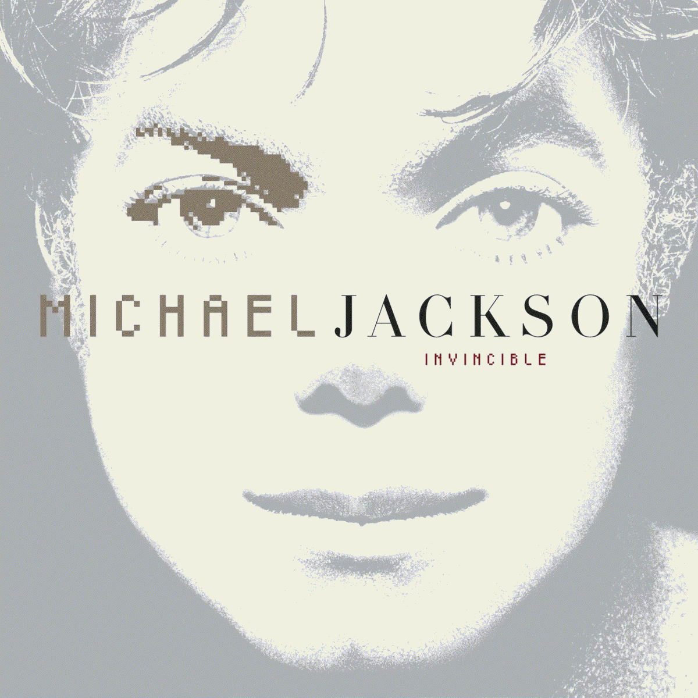

Em quarto lugar Invincible, o décimo e último álbum de estúdio do Michael Jackson, lançado em 30 de outubro de 2001 pela gravadora Epic Records. O álbum conta com participações de Carlos Santana, The Notorious B.I.G., Fats e Slash. Incorpora R&B, pop e soul e, assim como os trabalhos anteriores de Jackson, Invincible explora temas como romance, isolamento e críticas à mídia. Foi o último álbum lançado por Jackson antes de sua morte em 25 de junho de 2009.
Com custos estimados em cerca de 30 milhões de dólares, permanece o álbum mais caro já produzido. O primeiro single, "You Rock My World", foi o último grande sucesso de Jackson em sua carreira, alcançando a décima posição da Billboard Hot 100 nos Estados Unidos. A canção foi indicada ao prêmio de Melhor Performance Vocal Pop Masculina no Grammy Awards de 2002.
Invincible estreou no topo da Billboard 200, com vendas de 363.000 cópias na primeira semana. Também alcançou o primeiro lugar em outros 13 países ao redor do mundo. Inicialmente, Invincible recebeu avaliações medianas a negativas, tornando-se o álbum mais criticado de Jackson. No entanto, em análises retrospectivas, passou a ser visto de forma mais positiva, com elogios à sua musicalidade e produção em particular.
Em julho de 2002, após a decisão da Sony de encerrar abruptamente a promoção de Invincible, Jackson condenou abertamente o CEO da Sony Music, Tommy Mottola. Jackson se recusou a fazer turnê para promover o álbum, aumentando o crescente desentendimento entre ele e a Sony Music. Apesar disso, Invincible recebeu certificação de platina dupla nos Estados Unidos. O álbum vendeu mais de oito milhões de cópias em todo o mundo. Em 2009, ano da morte de Jackson, Invincible foi eleito pelos leitores online da Billboard como o melhor álbum da década de 2000.